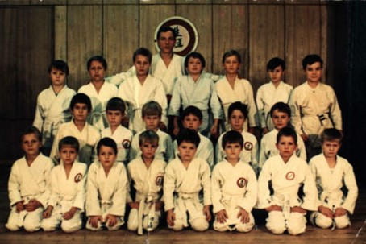
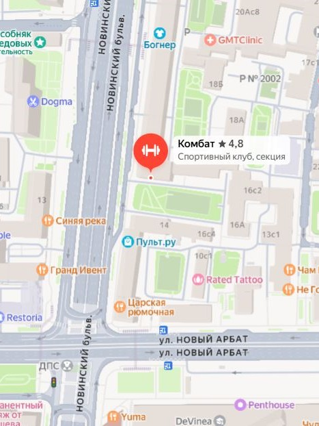

О клубе "Комбат"
С 1997 года мы развиваем боевые искусства в центре Москвы.
Клуб «Комбат» объединил в себе лучшие традиции на базе коллектива спортклуба «Арбат 51», в котором в конце 80-х тренировали известные специалисты единоборств: Глеб Горячев (каратэ Сэн'э), Николай Гречко (каратэ Сэнэ'э), Александр Королев (каратэ Сэн'э), Игорь Федорович Пестун (Мастер спорта СССР по боксу, Заслуженный тренер России по кикбоксингу), Александр Столяров (кикбоксинг КИТЭК), Юрий Семенов (кикбоксинг ЕПАКК), Константин Давыдов (каратэ, кикбоксинг клуб «Будо»), Алексей Иванов (каратэ Дзесимон).
Многообразие единоборств — этот лозунг полностью отражает развитие клуба «Комбат».
За эти годы, под одной крышей успешно развивались множество направлений различных боевых искусств: армейский рукопашный бой, всестилевое каратэ, ММА, самбо, боевое самбо, бразильское джиу-джитсу, бокс, тайский бокс, дайдоджуку (кудо), косики каратэ, ашихара каратэ, Сэн'Э, каратэ шотокан JKA, айкидо, тхэквондо, вин-чунь, нят-нам, крав-мага, чанбара-спорт (спочан) и многие другие.
Клуб «Комбат» — один из старейших в Москве. Являясь соучредителями Ассоциации клубов боевых искусств ЦАО (АКБИ), провели 15 турниров.
В настоящее время, Клуб «Комбат» активно сотрудничает с Федерацией армейского рукопашного боя Москвы (АРБ), Межрегиональной общественной физкультурно-спортивной организацией «Федерация стилевых боевых искусств» (ФСБИ), Международной Ассоциацией Витязей и Московской Ассоциацией Боевых Искусств (МАБИ), а также с Федерацией всестилевого каратэ России (ВКР).
Наши спортсмены регулярно участвуют в соревнованиях, становятся чемпионами, победителями и призёрами турниров различного уровня.
Бесценный опыт, накопленный за десятилетия, руководитель клуба «Комбат» Владимир Сергеевич Шаманин, искренне передаёт своим ученикам.

📞 Контакты
Телефон: +7 (925) 517-71-16
E-mail: clubcombat@yandex.ru
ВКонтакте: vk.com/clubcombatarbat
Telegram: t.me/+I21vBejZCLE0NjYy
📍 Внимание!
Занятия проходят в Школе № 1234 (начальная школа) по адресу: г. Москва, Новинский б-р, д. 18, стр. 1 (вход со стороны сквера).
🚶 от м. Смоленская, м. Краснопресненская, м. Баррикадная — 10 минут пешком

🥊 Многообразие единоборств — наш девиз с 1997 года.